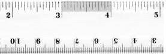

Motivație
Nanotehnologia este unul din cele mai interesante și mai importante domenii ale științei care există în prezent. Eu consider că acest domeniu va juca un rol foarte important în dezvoltarea tehnologiei din viitor și că va aduce beneficii omenirii, precum vindecarea unor boli care în momentul de față sunt incurabile sau sunt foarte greu de depistat și tratat. De altfel, utilizările nanotehnologiei sunt observabile printre diferite fațete ale societății, precum agricultura, îmbunătățirile casnice și chiar și în zone de protecție a mediului.
Nanotehnologia este un domeniu în curs de dezvoltare, care promite să ofere soluții multor probleme ale societății. Nanoștiinta este un domeniu de cercetare multidisciplinar, ea aflându-se la confluența a patru științe fundamentale matematica, fizica, chimia și biologia. Din această cauză consider că este normal ca aceasta să aibă aplicații în mai multe domenii și că este stiința care va fi punctul de plecare a multor dezvoltări din acest secol.
Nanotehnologie(nano+tehnologie)
"Nanotehnologie" este un termen colectiv pentru dezvoltările tehnologice la scară nanometrică. De asemenea, este o tehnică modernă care permite fabricarea de dispozitive, de talie moleculară, capabile să manipuleze materia atom cu atom. Termenul a fost introdus, în 1959, de fizicianul englez Richard Feynman.
nanoscară=între 1 și 100 nanometri
Este greu de imaginat cât de mică este nanotehnologia. Un nanometru este reprezentat de 1/1000000000 m.În continuare puteți vedea câteva exemple ilustrative:
Un inch are 25400000 nanometri.
O foaie de ziar are o grosime de aproximativ 100000 nanometri.
Dacă o minge mică ar fi un nanometru, atunci 1 metru ar avea dimensiunea pământului.

Nanotehnologia este ingineria sistemelor funcționale la scară moleculară sau inginerie la un nivel foarte mic.În esență, nanotehnologia este probabilitatea de a construi lucruri de la un nivel mic la un nivel mare folosind tehnici și unelte care sunt dezvoltate în prezent pentru a produce produse avansate, complete, extrem de utile și esențiale.